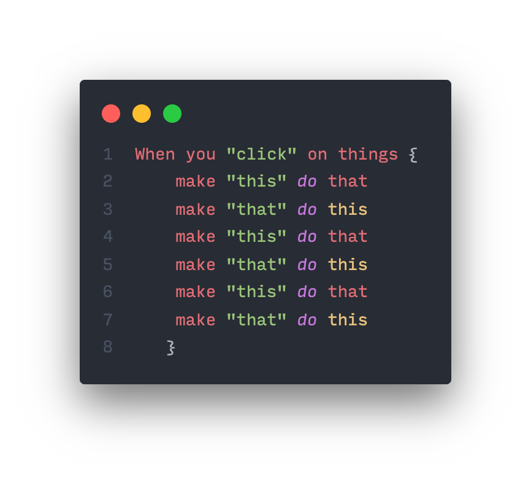

Muisovers en muisclicks!
Je kan Event Listeners combineren, zodat je bijvoorbeeld één "verzamel" functie kan maken om ALLE muisklikken op te vangen of ALLE mouse-overs op te vangen! Handig! Je kan dan CSS classes van HTML elementen als doelwit gebruiken om aan te geven op welke objecten geklikt of gehoverd moet worden!
